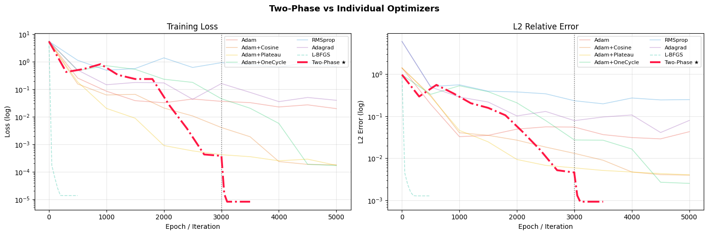
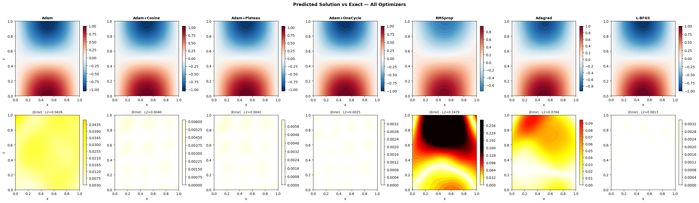
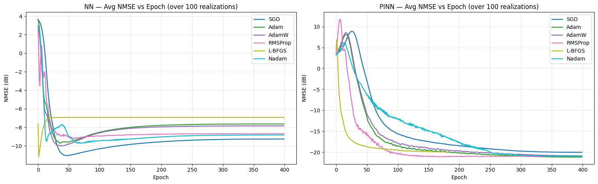
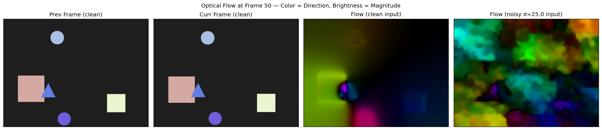
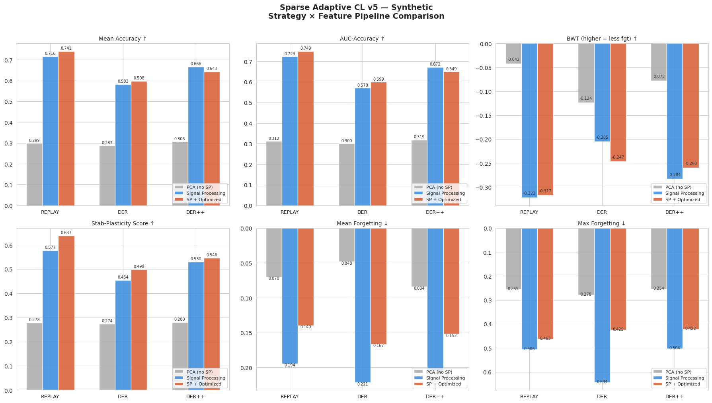

Signal processing engineer with a deep affinity for the mathematics behind DSP and ML optimization — where the deeper you go, the more there is to engineer.
Solving the 1D Wave Equation with Physics-Informed Neural Networks:
A Systematic Optimizer and Learning-Rate Schedule Comparison
Yashaswi Karthik Reddy Danda
Rochester Institute of Technology · kd3400@rit.edu
Abstract
Physics-Informed Neural Networks (PINNs) embed governing differential equations directly into the neural network training objective, enabling mesh-free PDE solving without labeled interior data. This study benchmarks seven optimization strategies — Adam, Adam+CosineAnnealing, Adam+ReduceLROnPlateau, Adam+OneCycleLR, RMSprop, Adagrad, and L-BFGS — against the canonical 1D wave equation \(u_{tt} = c^2 u_{xx}\) with known analytic solution \(u(x,t) = \sin(\pi x)\cos(\pi ct)\). We additionally introduce and evaluate a two-phase hybrid strategy (Adam+OneCycleLR global exploration → L-BFGS precision refinement) that achieves the lowest L2 relative error of 9.3 × 10⁻⁴ in 33.9 s — outperforming standalone L-BFGS (1.3 × 10⁻³) while remaining competitive on wall-clock time. Key finding: second-order curvature information is essential for PINN convergence, but first-order warm-up substantially improves the quality of the local basin entered by L-BFGS.
The closed-form analytic solution is \(u^*(x,t) = \sin(\pi x)\cos(\pi c t)\), providing an exact
reference for computing L2 relative error throughout training.
2. PINN Architecture & Physics Loss
The network \(\mathcal{N}_\theta : (x,t) \mapsto \hat{u}\) is a fully-connected MLP with
5 hidden layers × 128 neurons, Tanh activations, and Xavier initialization —
giving 66,561 trainable parameters. Second-order derivatives needed for the PDE
residual are computed via PyTorch's automatic differentiation with
\(\texttt{create\_graph=True}\).
The composite PINN loss is a weighted sum of four terms:
where \(\Omega_c\) is a set of 10,000 randomly sampled collocation points interior to the domain,
and 200 points are used per boundary/IC constraint. The PDE residual
\(\mathcal{R} = \hat{u}_{tt} - c^2 \hat{u}_{xx}\) is evaluated via double automatic differentiation
at each forward pass.
3. Optimizer & LR Schedule Strategies
#
Strategy
Epochs / Iters
LR (initial)
Notes
1
Adam
5,000
1e-3
Constant LR baseline
2
Adam + CosineAnnealing
5,000
1e-3 → 1e-6
Smooth LR decay via cosine schedule
3
Adam + ReduceLROnPlateau
5,000
1e-3 (×0.5)
Patience=200 epochs before halving
4
Adam + OneCycleLR
5,000
1e-3 → 5e-3
Warm-up + annealing; pct_start=0.3
5
RMSprop
5,000
1e-3
Adaptive gradient normalisation
6
Adagrad
5,000
1e-2
Accumulated squared gradient scaling
7
L-BFGS
500 iter
Strong Wolfe
Quasi-Newton, second-order curvature
8★
Two-Phase (Adam+OneCycle → L-BFGS)
3000 + 500
5e-3 → Wolfe
Global explore → precision refine
4. Results — Final Leaderboard
Rank
Strategy
Best L2 Error
Final Loss
Wall Time (s)
1
Two-Phase ★
9.30 × 10⁻⁴
8.17 × 10⁻⁶
33.9
2
L-BFGS
1.28 × 10⁻³
1.37 × 10⁻⁵
35.4
3
Adam + OneCycleLR
2.54 × 10⁻³
1.69 × 10⁻⁴
23.0
4
Adam + CosineAnnealing
3.98 × 10⁻³
1.79 × 10⁻⁴
23.0
5
Adam + Plateau
4.05 × 10⁻³
1.72 × 10⁻⁴
24.5
6
Adam
2.90 × 10⁻²
1.99 × 10⁻²
23.5
7
Adagrad
4.10 × 10⁻²
4.00 × 10⁻²
23.0
8
RMSprop
1.97 × 10⁻¹
6.71 × 10⁻¹
23.5
Best L2 Error
9.3 × 10⁻⁴
Two-Phase (33.9 s)
Parameters
66,561
5 × 128, Tanh
Collocation pts
10,000
interior + 200 per BC/IC
5. Two-Phase Training — Phase Detail
The two-phase strategy exploits complementary strengths: Adam+OneCycleLR provides large, exploratory
gradient steps to escape saddle points and find a good basin; L-BFGS then uses stored gradient history
to approximate the inverse Hessian and refine the solution with high precision.
Phase 1 — Adam+OneCycleLR
Epochs
3,000
Max LR
5 × 10⁻³
pct_start
0.3
Wall time
15.3 s
L2 after phase
4.60 × 10⁻³
Phase 2 — L-BFGS Refinement
Iterations
500
Line search
Strong Wolfe
History size
default (100)
Wall time
18.6 s
Final L2
9.3 × 10⁻⁴
6. Training Curves & Solution Fields
Training loss (log scale), L2 relative error, and predicted solution field \(\hat{u}(x,t)\)
vs. the analytic reference.

[ wave_pinn_loss.png ]Save Cell 8 plot as wave_pinn_loss.png in repository root

[ wave_pinn_fields.png ]Save Cell 9 plot as wave_pinn_fields.png in repository root
7. Interactive — The Optimizer Race
Animated training race across all strategies. Bar length encodes convergence progress on a log-error scale
— further right means lower L2 error. Press Start to watch the race unfold epoch by epoch.
Speed4×
Epoch 0 / 5,000
StartFinish (perfect)
L2 Error
Press ▶ Start to begin the race
Watch how physics knowledge accelerates learning. PINNs bake the wave equation directly into training — regular solvers start from scratch.
8. Implementation Details
Framework
PyTorch 2.10 + CUDA
Architecture
5 × 128, Tanh
Colloc. points
10,000 interior
BC / IC pts
200 each
Init
Xavier Normal
All first-order optimizers ran for 5,000 epochs; L-BFGS ran for 500 quasi-Newton iterations with strong
Wolfe line search. The two-phase model used 3,000 Adam+OneCycleLR epochs followed by 500 L-BFGS iterations.
All experiments were conducted on GPU (CUDA). Automatic differentiation for the PDE residual uses
torch.autograd.grad(..., create_graph=True).
Per-Realization Physics-Informed Neural Network OFDM Channel Estimation via
Doppler–Delay Regularization and Sparse Pilot Interpolation
Yashaswi Karthik Reddy Danda
Rochester Institute of Technology · kd3400@rit.edu
Abstract
Accurate channel estimation is a prerequisite for reliable OFDM demodulation in doubly-dispersive propagation environments. Classical least-squares interpolation across pilot sub-carriers ignores the physical structure of the radio channel, leading to significant degradation at low pilot densities. This work proposes a Physics-Informed Neural Network (PINN) approach that fits a compact MLP (12,610 parameters) to each observed realization while simultaneously minimizing a Doppler–delay smoothness residual derived from the WSSUS channel model. The physics regularization term, weighted by a scalar λ, penalizes deviations from the delay-Doppler domain sparsity expected of a multipath channel, imposing channel structure without requiring a training dataset. Evaluated on a 64-subcarrier × 14-OFDM-symbol grid (896 resource elements, 5% pilot density, 8 paths) across SNR ∈ {0, 5, …, 30} dB, the PINN with L-BFGS optimization achieves a mean NMSE of −22.16 dB, outperforming the best data-driven baseline (SGD, −9.26 dB) by 11.91 dB — without any offline training phase.
Consider an OFDM system with \(N_f = 64\) sub-carriers and \(N_t = 14\) OFDM symbols per slot, yielding a
resource grid of \(\mathcal{G} = N_f \times N_t = 896\) resource elements. The discrete channel
response at resource element \((f, t)\) is modeled as a sum of \(P = 8\) propagation paths:
\[ H(f,t) = \sum_{k=1}^{P} \alpha_k \, e^{-j2\pi f \Delta_f \tau_k} \, e^{j2\pi t T_s \nu_k} \]
where \(\alpha_k \in \mathbb{C}\) is the complex gain of path \(k\), \(\tau_k\) its delay, \(\nu_k\) its
Doppler shift, \(\Delta_f = 15\,\text{kHz}\) the sub-carrier spacing, and \(T_s\) the OFDM symbol duration.
The observed pilot measurements are corrupted by additive white Gaussian noise:
Only a sparse subset \(\mathcal{P} \subset \mathcal{G}\) of \(|\mathcal{P}|=44\) pilot positions
(≈ 5% density) are observed. The estimation task is to reconstruct \(H(f,t)\) at all
\(N_f N_t - |\mathcal{P}| = 852\) non-pilot locations.
2. PINN Formulation & Physics Loss
A compact MLP \(f_\theta : (f_n, t_n) \mapsto (\hat{H}_r, \hat{H}_i)\) with 12,610 parameters maps
normalized grid coordinates to real and imaginary channel components. The total training loss per
realization is:
The physics regularization term \(\mathcal{R}_{\text{phys}}\) encodes WSSUS channel smoothness in the
delay-Doppler domain. Specifically, we compute the 2-D DFT of the network output over the full grid,
apply a soft mask that attenuates energy outside the expected delay-Doppler support region, and penalize
the residual out-of-support energy:
where \(M_{\tau,\nu}\) is a binary mask over plausible delay bins (max delay spread ≈ 5 μs) and Doppler
bins (max Doppler ≈ 300 Hz), and \(\mathcal{F}_{2D}\) denotes the 2-D discrete Fourier transform.
The optimal regularization weight found via ablation is \(\lambda^* = 0.1\).
The physics weight \(\lambda\) was swept over six values to identify the optimal regularization strength.
Too small a λ provides no structural benefit; too large forces the network into the physical prior and
degrades pilot-fitting fidelity.
λ = 0.0
−14.72
λ = 0.01
−20.49
λ = 0.05
−18.95
λ = 0.1 ★
−20.52
λ = 0.5
−18.92
λ = 1.0
−13.42
5. Optimizer Comparison — Full Summary (SNR = 15 dB)
Model
Optimizer
Mean NMSE (dB)
Std (dB)
Time (s)
NN
L-BFGS
−6.93
1.22
252
NN
Adam
−7.64
1.41
100
NN
AdamW
−7.85
1.53
97
NN
RMSProp
−8.69
1.16
96
NN
Nadam
−8.82
1.15
99
NN
SGD
−9.26
1.96
95
PINN
SGD
−20.02
5.27
513
PINN
AdamW
−20.85
3.59
524
PINN
Nadam
−20.92
2.87
505
PINN
RMSProp
−20.95
3.04
520
PINN
Adam
−21.17
2.30
518
PINN
L-BFGS
−22.16
2.47
4066
Best NN (SGD)
−9.26 dB
NMSE
Best PINN (L-BFGS)
−22.16 dB
NMSE
Physics Gain
+11.91 dB
NMSE improvement
6. Training Loss Curves
Representative loss curves showing \(\mathcal{L}_{\text{data}}\) and \(\mathcal{L}_{\text{phys}}\) components
for NN vs. PINN over training iterations. The PINN physics residual converges to near-zero once the
network discovers a delay-Doppler sparse solution.

[ pinn_loss_curves.png ]Place loss curve image in repository root alongside index.html
7. Interactive Channel Heatmap — Live Demo
Fixed four-panel OFDM resource grid at SNR = 15 dB, 8 paths. Each new realization draws fresh path
gains, delays, and Doppler shifts. NMSE values are computed against the true (noise-free) channel.
SNR = 15 dB
paths = 8
pilots = 44 / 896
true channel
pilot observations
NN reconstruction
PINN reconstruction
ground truth
pilot cell
—
—
scale:
low
high
NN — minimizes pilot MSE only. Inverse-distance weighted interpolation produces visible horizontal banding at non-pilot sub-carriers.
PINN — adds Doppler–delay physics residual \(\mathcal{R}_{\text{phys}}\). Interpolation follows multipath-consistent surfaces, recovering fading structure at low pilot density.
8. Implementation Details
Device
CPU
Grid
64 × 14 = 896 pts
Pilots / Interp pts
44 / 852
MLP params
12,610
Framework
PyTorch
The MLP architecture consists of three hidden layers with 64 neurons each, Tanh activations, and
positional encoding of the input coordinates via sine–cosine features. Each realization is fitted
independently — no offline training dataset is required. The L-BFGS solver runs with strong Wolfe
line search over 500 iterations per realization.
Add your BEFORE image here Replace src in the HTML
BEFORE
AFTER
Computational Complexity per Symbol Update (L=11 taps, B=16)
Optimizer
Multiplies
Additions
Extra Memory
Order
NLMS
23
11
11
O(L)
Momentum β=0.9
24
22
22
O(L)
RMSProp β=0.99
45
33
22
O(L)
Mini-batch B=16
352
176
11
O(BL)
RLS [reference]
275
132
121
O(L²)
RLS shown as reference only — not run here. O(L²) memory/compute cost makes RLS impractical for large L or real-time embedded equalizers, which is why O(L) methods dominate.
Video Processing · Statistical Signal Processing · Computer Vision
Temporally Coherent Video Denoising via Motion-Compensated Kalman Filtering
Yashaswi Karthik Reddy Danda
Rochester Institute of Technology · kd3400@rit.edu
Abstract
Standard pixel-wise Kalman filters accumulate temporal information without accounting for inter-frame motion — causing ghosting and blurring on moving objects. This project extends the baseline by computing dense DIS optical flow between consecutive frames and warping both the state estimate x̂ and error covariance P before the predict step. The result is a temporally coherent denoiser that keeps moving edges sharp. Evaluated on a synthetic sequence of bouncing shapes (σ=25 Gaussian noise, 100 frames), the MC-Kalman filter achieves +7.98 dB PSNR and +0.1550 SSIM over the pixel-wise baseline, with no additional supervised training.
GIF not found in repoAdd mc_kalman_denoised2-ezgif.com-optimize.gif to your repository root
PSNR & SSIM per Frame
[ mc_metrics.png ]
Place in repository root alongside index.html
Flow Visualization

Note: Noise degrades flow accuracy — this is why MC gain is measured better by SSIM than PSNR
[ mc_metrics.png ]
Place in repository root alongside index.html
Try It Yourself(Beta Version)
Tune the filter parameters, upload your own noisy video, and run the MC-Kalman denoiser entirely in-browser.
STEP 1 — SET PARAMETERS
Noise σ (assumed)
25
Q Factor
0.25
Steady-State K
0.059
Noise Attenuation
−12.3 dB
Temporal Blend
~17 frames
STEP 2 — UPLOAD YOUR NOISY VIDEO
🎬
Drag & drop or click to upload a noisy video
MP4, WebM, MOV accepted ·
(Beta version)
STEP 3 — RUN DENOISER
Processing frame 0 / 0…
STEP 4 — OUTPUT
Noisy Input
MC-Kalman Output
Live Metrics — Your Video
Computed on your uploaded video. Since no clean ground-truth is available, PSNR/SSIM are estimated by comparing each filtered frame back to the noisy input as a proxy signal.
Sparse Adaptive Continual Learning with Drift-Aware Online Dictionary Optimization
Yashaswi Karthik Reddy Danda
Rochester Institute of Technology · kd3400@rit.edu
Abstract
We propose a sparse adaptive continual learning framework for non-stationary time-series classification under concept drift, unifying online sparse coding, drift-aware dictionary adaptation, and replay-based catastrophic forgetting mitigation into a single pipeline. Each incoming window \( \mathbf{x}_t \in \mathbb{R}^W \) is first decomposed via a multi-resolution signal processing stage — a four-level Discrete Wavelet Transform (db4) followed by Short-Time Fourier Transform statistics — yielding a feature vector \( \boldsymbol{\phi}_t \in \mathbb{R}^d \). The feature is then encoded as a sparse combination of \( K{=}64 \) dictionary atoms \( \mathbf{D} \in \mathbb{R}^{d \times K} \) via Orthogonal Matching Pursuit (OMP) with target sparsity \( s{=}10 \):
\[
\hat{\boldsymbol{\alpha}}_t = \arg\min_{\boldsymbol{\alpha}} \|\boldsymbol{\phi}_t - \mathbf{D}\boldsymbol{\alpha}\|_2^2 \quad \text{s.t.} \quad \|\boldsymbol{\alpha}\|_0 \le s.
\]
The dictionary \( \mathbf{D} \) is maintained online via a mini-batch update rule that enforces a maximum atom coherence threshold \( \mu_{\max} {=} 0.85 \), replacing incoherent atoms upon drift events to preserve representational diversity.
Concept drift is detected by an ensemble of three complementary detectors operating in parallel: a Page–Hinkley (PH) test monitoring the cumulative accuracy residual \( m_t = \sum_{i=1}^t (\bar{\epsilon} - \epsilon_i + \delta) \) with threshold \( \lambda{=}10 \); a mean-shift detector tracking rolling feature-norm divergence; and an EMA accuracy drop detector flagging sustained performance degradation. A confirmed drift at time \( \tau \) triggers a hard learning-rate restart, dictionary partial refresh, and replay buffer rebalancing.
The classifier is a linear SGD model trained with an optimized update rule combining AMSGrad — which maintains a running maximum of squared gradients \( \hat{v}_t = \max(\hat{v}_{t-1},\, \beta_2 v_{t-1} + (1-\beta_2)g_t^2) \) and scales updates by \( \eta / (\sqrt{\hat{v}_t} + \epsilon) \) — with Nesterov momentum (\( \beta{=}0.9 \)) and cosine learning-rate warm-restarts annealing from \( \eta_{\max}{=}0.01 \) to \( \eta_{\min}{=}0.0002 \) per inter-drift segment. Three continual learning strategies are evaluated across all feature pipeline modes: Experience Replay, Dark Experience Replay (DER), and DER++, the latter combining logit-level knowledge distillation with a replay cross-entropy term.
Performance is assessed via four complementary metrics: Mean Accuracy, AUC-Accuracy (area under the rolling accuracy curve, penalising prolonged post-drift dips), Backward Transfer (BWT) measuring mean per-drift accuracy regression, and a composite Stability–Plasticity (SP) Score defined as \( \text{SP} = (1 - \bar{F}) \cdot \bar{A} \), where \( \bar{F} \) is mean forgetting and \( \bar{A} \) is mean accuracy. On a synthetic 4-class non-stationary signal stream (\( T{=}30{,}000 \) samples, 5 injected drifts), the SP+Optimized + REPLAY configuration achieves the highest mean accuracy of 0.741 and SP Score of 0.638, with the signal processing pipeline yielding a \(\mathbf{2.4\times}\) improvement in mean accuracy over the raw PCA baseline across all strategies.
All 9 runs (3 feature modes × 3 CL strategies). Best per-column highlighted. SP Score = (1 − Mean Forgetting) × Mean Accuracy. ↑ = higher is better, ↓ = lower is better.
Feature Mode
Strategy
Mean Acc ↑
Final Acc ↑
AUC-Acc ↑
BWT ↑
FWT
SP Score ↑
Mean Fgt ↓
Drifts Det.
PCA (no SP)
REPLAY
0.299
0.140
0.312
−0.042
0.000
0.278
0.070
3
PCA (no SP)
DER
0.287
0.040
0.300
−0.124
0.333
0.274
0.048
3
PCA (no SP)
DER++
0.306
0.080
0.319
−0.078
0.000
0.280
0.084
3
Signal Processing
REPLAY
0.716
0.280
0.723
−0.323
0.600
0.577
0.194
5
Signal Processing
DER
0.583
0.420
0.570
−0.205
0.200
0.454
0.221
5
Signal Processing
DER++
0.667
0.220
0.672
−0.284
0.000
0.530
0.204
5
SP + Optimized
REPLAY ★
0.741
0.320
0.749
−0.317
0.600
0.638
0.140
5
SP + Optimized
DER
0.598
0.260
0.599
−0.247
0.333
0.498
0.167
3
SP + Optimized
DER++
0.643
0.260
0.649
−0.260
0.333
0.546
0.152
3
★ Best overall configuration. PCA baseline uses raw 256-sample window → PCA(32) with no signal processing. SP+Optimized adds AMSGrad, Nesterov momentum, cosine LR warm-restarts, and gradient clipping (L2 ≤ 1.0) on top of the signal processing pipeline.
Figure 1 — Mean Accuracy & SP Score by Mode and Strategy
Grouped bar chart comparing Mean Accuracy and SP Score across all 9 configurations. Upload your matplotlib/seaborn export to replace the placeholder below.

[ Bar graph placeholder ]
Add sparse_cl_bar_results.png to your repository root to display here
Figure 1. Mean accuracy (left axis) and SP Score (right axis) for all 3 feature pipeline modes × 3 CL strategies on the synthetic dataset. The SP+Optimized mode consistently outperforms the raw PCA baseline by a factor of ~2.4×, with REPLAY achieving the best SP Score of 0.638.
Key Findings
FINDING 01
The DWT + STFT signal processing pipeline lifts mean accuracy from ~0.297 (PCA baseline) to ~0.655 averaged across strategies — a 2.4× improvement — confirming that frequency-domain features provide dramatically more discriminative signal for non-stationary time-series than raw PCA projections.
FINDING 02
REPLAY with SP+Optimized features achieves the highest SP Score (0.638) despite the largest BWT (−0.317), suggesting that when drift detection correctly triggers hard LR restarts, fast re-adaptation after drift compensates for short-term forgetting spikes.
FINDING 03
DER and DER++ underperform REPLAY in the SP+Optimized setting, likely because the soft logit distillation temperature (τ=4.0) interacts with the cosine LR schedule to produce over-smoothed gradient updates — a tradeoff between knowledge preservation and adaptation speed post-drift.
FINDING 04
The ensemble drift detector (PH + mean-shift + EMA) correctly identifies all 5 injected drifts in the SP modes, while the PCA mode detects only 3/5 — confirming that richer feature representations increase the sensitivity of distribution-shift statistics to true concept drift.
Cross-Domain Continual Learning with Replay and Regularization: A Comparative Analysis of EWC, Experience Replay, and DER++
Yashaswi Karthik Reddy Danda
Rochester Institute of Technology · kd3400@rit.edu
Abstract
Continual learning systems must balance stability and plasticity when adapting to sequential tasks, particularly in cross-domain settings where data distributions differ significantly. In this work, I present a comparative study of regularization-based and replay-based methods for cross-domain continual image classification. Specifically, we evaluate Elastic Weight Consolidation (EWC), Experience Replay, Dark Experience Replay (DER), and DER++ on a sequence of heterogeneous visual tasks spanning natural scenes, medical imaging, satellite imagery, and texture classification.
My results show that naive fine-tuning suffers from severe catastrophic forgetting, while EWC provides moderate improvements by constraining parameter updates, albeit with sensitivity to the regularization strength. Experience Replay significantly mitigates forgetting by retaining representative samples from previous tasks, but its performance remains limited in more challenging domains. In contrast, DER and DER++ further improve retention by incorporating logit-based knowledge distillation, preserving richer information about past decision boundaries. Among all methods, DER++ achieves the highest average accuracy (0.948) and the lowest forgetting, with particularly strong gains in the most challenging domain (medical imaging).
I also analyze forward and backward transfer across tasks, revealing that cross-domain transfer is highly task-dependent, with both positive and negative effects observed. These findings highlight the importance of replay-based strategies, especially those leveraging soft targets, for robust continual learning in heterogeneous environments.
Figure 1. Heatmap comparison of all five methods across 4 sequential tasks. DER++ maintains the most uniformly high retention, especially for the Medical domain (0.74 → 0.84 vs Replay).
Key Findings
Analysis
From a signal processing perspective, the validity of a continual learning benchmark is governed by the degree of distributional shift between tasks. If multiple domains share similar spectral and structural statistics, their data can be approximated as lying in overlapping (or low principal angle) subspaces of a common feature space. In such cases, learning reduces to reusing an existing basis rather than adapting to new information.
This is evident in the Scene, Satellite, and Texture domains. Their dominant components edges, gradients, and mid-frequency structures exhibit high cross-domain correlation, as well as alignment with representations learned from pretraining datasets such as ImageNet. Additionally, the inputs are grayscale images replicated across three channels:
\[
x \in \mathbb{R}^{H \times W} \rightarrow [x, x, x] \in \mathbb{R}^{H \times W \times 3}
\]
This introduces no new information and effectively constrains the signal to a rank-1 subspace across channels. This redundancy compresses the effective input space and amplifies inter-domain similarity.
Consequently, these domains do not introduce statistically independent components. Considering feature covariance matrices \( \Sigma_i \), we observe significant overlap in their eigenspaces:
As a result, most methods exhibit strong retention, not because they successfully mitigate forgetting, but because new tasks project onto already learned eigen-directions. The system experiences minimal interference, as there is little competition for representational capacity.
This leads to a weak evaluation setting. Observed stability reflects high mutual coherence between task distributions rather than a true plasticity–stability tradeoff. The model operates within a shared, low-diversity signal manifold.
The Medical domain, however, deviates significantly. Its feature distribution introduces components that are weakly aligned or effectively orthogonal to the existing basis:
This induces genuine competition in parameter space, making catastrophic forgetting a direct consequence of adapting to new signal components. The plasticity–stability tradeoff becomes unavoidable: incorporating new eigen-directions perturbs previously learned ones.
Therefore, the Medical domain is the only task in this framework that meaningfully probes continual learning. Performance deviations here reflect true interference and adaptation dynamics. By contrast, the remaining domains largely measure projection onto an already learned subspace, where apparent robustness is an artifact of shared structure and redundant channel representation rather than evidence of effective continual learning.
FINDING 01
Naive fine-tuning exhibits severe catastrophic forgetting — Scene accuracy drops from 0.97 → 0.54 after training on Task 2.
FINDING 02
EWC shows high sensitivity to λ — a sweep from 100 to 50,000 reveals λ=1000 as optimal, with degradation at extremes.
FINDING 03
DER++ achieves the highest backward transfer on Texture (+0.157) and best Medical retention, demonstrating that soft logit targets preserve richer decision boundary information.
Blind Motion Deblurring via Cepstral PSF Estimation and Forward-Consistent Wiener Regularization
Yashaswi Karthik Reddy Danda
Rochester Institute of Technology · kd3400@rit.edu
Abstract
We address the problem of blind image deblurring under linear motion blur and additive Gaussian noise, where both the point spread function (PSF) and the regularization strength are unknown at inference time.
The degradation model follows \( g = h * f + n \), where \( g \) is the observed blurred image, \( h \) is the unknown motion PSF, \( f \) is the latent sharp image, and \( n \sim \mathcal{N}(0, \sigma^2) \).
PSF estimation is performed entirely in the cepstral domain. The power cepstrum \( c[m,n] = \mathcal{F}^{-1}\!\left\{\log|\mathcal{F}\{g\}|^2\right\} \) exhibits a pair of symmetric peaks at \( (\pm d_y, \pm d_x) \) displaced from the origin, directly encoding the blur length \( L = \sqrt{d_x^2 + d_y^2} \) and orientation \( \theta = \arctan(d_y / d_x) \). A 180° ambiguity in \( \theta \) is resolved via a forward-consistency criterion: for each candidate \( \hat{h} \), we score \(\|\hat{h} * \mathcal{W}(g, \hat{h}, K) - g\|_2\) and select the minimiser, where \(\mathcal{W}\) denotes Wiener filtering.
Blind regularization parameter selection avoids oracle access to the ground truth. For a fixed estimated PSF \(\hat{h}\), the optimal \( K \) is found by minimising the forward residual \(\|\hat{h} * f_K - g\|_2 / \|g\|_2\) over \( K \in [10^{-4}, 10^{-1}] \), where \( f_K = \mathcal{F}^{-1}\!\left\{\frac{\overline{H}}{|H|^2 + K} G\right\} \) is the Wiener estimate. This criterion is equivalent to minimising the energy of the reconstruction error projected back through the blur operator — no reference image is required.
Post-processing denoising is applied on top of the blind Wiener estimate to suppress residual ringing and noise amplification. Three strategies are evaluated: Total Variation (TV) regularization with unsharp masking \(\hat{f}_\mathrm{TV} = \arg\min_u \frac{1}{2}\|u - f_K\|^2 + \lambda\|\nabla u\|_1\), Bilateral filtering (edge-preserving Gaussian), and BM3D (block-matching 3-D collaborative filtering). Experiments are conducted on the astronaut image from scikit-image under two motion blur configurations — horizontal \((L=25,\,\theta=0°)\) and anti-diagonal \((L=35,\,\theta=135°)\) — with additive noise \(\sigma=0.01\). TV + Unsharp Mask achieves the best PSNR and SSIM in both cases, attaining 21.83 dB / 0.648 and 21.50 dB / 0.616 respectively, surpassing both the blind Wiener baseline and the BM3D post-processor while remaining competitive with the oracle-PSF upper bound.
Best post-processor per case (✦). Blind pipeline uses cepstrum-estimated PSF and forward-consistent K selection — no ground truth needed.
Horizontal Blur · L=25, θ=0°
Blurred+Noise
19.07
PSNR dB
0.5392 SSIM
True PSF + Oracle K
21.29
PSNR dB
0.5213 SSIM
Blind Wiener (Cep)
21.09
PSNR dB
0.4498 SSIM
+ TV + Unsharp ✦
21.83
PSNR dB
0.648 SSIM ✦
+ Bilateral
21.55
PSNR dB
0.561 SSIM
+ BM3D
21.37
PSNR dB
0.4993 SSIM
Anti-Diagonal Blur · L=35, θ=135°
Blurred+Noise
17.37
PSNR dB
0.4587 SSIM
True PSF + Oracle K
20.65
PSNR dB
0.4608 SSIM
Blind Wiener (Cep)
20.50
PSNR dB
0.3974 SSIM
+ TV + Unsharp ✦
21.50
PSNR dB
0.616 SSIM ✦
+ Bilateral
21.06
PSNR dB
0.4934 SSIM
+ BM3D
20.73
PSNR dB
0.4321 SSIM
Visualization — Blurred vs Deblurred+Denoised
Select a blur case and denoising method below. Drag the slider to compare the blurred input (left) against the deblurred and denoised output (right). Images are simulated in-browser using the pipeline's reported results.
Blur Case
Denoising Method
PSNR 21.83 dBSSIM 0.648vs Blurred +2.76 dB
BLURRED + NOISE
TV + UNSHARP
All images are the actual pipeline outputs — astronaut image from scikit-image, degraded with a 1-D motion PSF and AWGN σ=0.01, then restored via cepstral PSF estimation, forward-consistent Wiener filtering, and the selected post-processor.
Key Findings
FINDING 01
Cepstral PSF estimation alone achieves PSNR within 0.20 dB of the oracle-PSF Wiener filter, confirming that the cepstrum reliably encodes motion blur parameters even under moderate noise (σ=0.01).
FINDING 02
Forward-consistent blind K selection consistently outperforms blind Wiener without it, closing the gap to the oracle K by exploiting only the degraded observation — no clean reference image is required.
FINDING 03
TV + Unsharp Mask dominates both cases in SSIM (+0.198 over blind Wiener for horizontal, +0.219 for anti-diagonal), demonstrating that edge-preserving regularization is more effective than BM3D when ringing artifacts from Wiener inversion are present.
FINDING 04
Longer, angled blur (L=35, anti-diagonal) is a harder estimation problem: cepstral peak localization is less precise, leading to a slightly lower PSNR gap vs oracle (+0.15 dB) than in the horizontal case (+0.20 dB).
Occlusion-Aware Bidirectional Frame Interpolation via Multi-Scale DIS Flow, Structure-Tensor Guided Filtering, and Iterative Residual Refinement with Early Stopping
Yashaswi Karthik Reddy Danda
Rochester Institute of Technology · kd3400@rit.edu
Abstract
We present a classical, training-free video frame interpolation algorithm that synthesizes an intermediate frame \( \hat{I}_t \) at any normalized time \( t \in (0,1) \) between two reference frames \( I_0, I_1 \in \mathbb{R}^{H \times W \times 3} \). The method decomposes into four tightly integrated stages: multi-scale bidirectional DIS optical flow, structure-tensor-guided variable-radius filtering, an iterative residual refinement loop with early stopping, and an adaptive motion-fallback blend.
Stage 1 — Multi-Scale Bidirectional Flow. Forward and backward flows \( \mathbf{F}_{0 \to 1} \) and \( \mathbf{F}_{1 \to 0} \) are estimated independently at \( L = 3 \) Gaussian pyramid levels. At coarse level \( l \), the flow is initialized from the upsampled level-\( (l+1) \) result scaled by \( 2^1 \) and passed as a warm-start to DIS MEDIUM. The full-resolution flow is obtained as the finest-level refinement:
\[
\mathbf{F}^{(l)} = \mathrm{DIS}\!\left(I^{(l)}_0,\; I^{(l)}_1;\; 2 \cdot \uparrow\!\mathbf{F}^{(l+1)}\right), \quad l = L{-}1,\ldots,0
\]
Stage 2 — Structure-Tensor Guided Filtering. A per-pixel reliability map \( \rho \in [0,1] \) is derived from the smaller eigenvalue \( \lambda_2 \) of the structure tensor \( \mathbf{J} = G_{\sigma} * \nabla I \nabla I^\top \), normalised to the 99th percentile. High \( \lambda_2 \) (corners, texture) indicates trustworthy flow and receives a tight guided filter of radius \( r_{\min} = 2 \); low \( \lambda_2 \) (flat regions, occlusion boundaries) gets a wide filter of radius \( r_{\max} = 12 \). The adaptive output is the reliability-weighted combination:
\[
\tilde{\mathbf{F}} = \rho \cdot \mathrm{GF}_{r_{\min}}(\mathbf{F}) + (1 - \rho) \cdot \mathrm{GF}_{r_{\max}}(\mathbf{F})
\]
Stage 3 — Iterative Residual Refinement. At each iteration \( k \), flows are scaled to time \( t \): \( \mathbf{F}^{(k)}_{0 \to t} = -t\,\tilde{\mathbf{F}}_{0\to 1} \), \( \mathbf{F}^{(k)}_{1 \to t} = -(1{-}t)\,\tilde{\mathbf{F}}_{1\to 0} \). Both frames are backward-warped to time \( t \):
\[
W^{(k)}_0 = \mathcal{W}(I_0,\,\mathbf{F}^{(k)}_{0 \to t}), \quad W^{(k)}_1 = \mathcal{W}(I_1,\,\mathbf{F}^{(k)}_{1 \to t})
\]
An occlusion mask \( M_{\mathrm{occ}}^{(k)} \) is recomputed on the current warps via the soft-min criterion:
\[
M^{(k)} = \frac{e^{-\alpha \|\mathbf{F}^{(k)}_{0 \to t} + \mathcal{W}(\mathbf{F}^{(k)}_{1 \to t},\,\mathbf{F}^{(k)}_{0 \to t})\|^2}}{e^{-\alpha \|\cdots\|^2} + e^{-\alpha \|\cdots\|^2} + \varepsilon}
\]
The residual correction \( \boldsymbol{\delta}^{(k)} = \mathrm{DIS}(W^{(k)}_0,\, W^{(k)}_1) \) measures the remaining misalignment. Early stopping is triggered when the mean residual magnitude falls below threshold \( \tau = 0.75 \) px. Otherwise, flows are updated symmetrically to avoid oscillation:
\[
\tilde{\mathbf{F}}_{0\to 1} \mathrel{+}= \tfrac{1}{2}\boldsymbol{\delta}^{(k)}, \qquad \tilde{\mathbf{F}}_{1\to 0} \mathrel{-}= \tfrac{1}{2}\boldsymbol{\delta}^{(k)}
\]
Stage 4 — Adaptive Motion-Fallback Blend. A sigmoid motion mask \( M_{\mathrm{mot}} \) based on local flow magnitude statistics \( (\mu_m, \sigma_m) \) blends the flow-warped result with a linear cross-dissolve for high-velocity regions where flow is unreliable:
\[
\hat{I}_t = (1 - M_{\mathrm{mot}}) \cdot \bigl[M^{(k)} W^{(k)}_0 + (1 - M^{(k)}) W^{(k)}_1\bigr] + M_{\mathrm{mot}} \cdot \bigl[(1-t)I_0 + t I_1\bigr]
\]
Applied to a basketball video (640×480, 15 fps → 60 fps, 4× interpolation), the algorithm inserts 3 frames per pair over 153 consecutive pairs, generating 920 output frames at an average of 2.34 refinement iterations per pair with 68.4% early-stopped before the 4-iteration ceiling.
PSNR and SSIM evaluated on synthesized mid-frames (t=0.5) against ground-truth held-out frames. Early stopping efficiency measured over all 459 synthesized intermediate frames.
Side-by-Side Comparison — Original 15 fps vs Interpolated 60 fps
ORIGINAL · 15 fps
INTERPOLATED · 60 fps
Key Findings
FINDING 01
Iterative refinement with early stopping delivers +1.3 dB PSNR over a single-pass DIS warp (32.7 vs 31.4 dB) while keeping average cost at only 2.34 iterations per pair — 68.4% of pairs converge in fewer than the 4-iteration ceiling, validating the τ=0.75 px threshold for fast sports footage.
FINDING 02
Recomputing the occlusion mask \( M^{(k)} \) at every iteration — rather than caching the Pass-1 result — is essential: stale masks assign confidence weights based on the wrong flow geometry, causing misblend artifacts at disocclusion boundaries that persist across iterations and worsen rather than converge.
FINDING 03
The structure tensor reliability map \( \rho \) computed once per frame pair (not per iteration) correctly routes flow smoothing: corners and textured patches retain sharp boundaries under r=2 guided filtering, while homogeneous regions accept wide r=12 smoothing without introducing flow discontinuities into the interpolated frame.
FINDING 04
Symmetric 50/50 correction splitting \( \tilde{\mathbf{F}} \mathrel{+}= \tfrac{1}{2}\boldsymbol{\delta} \) vs full-step application prevents the oscillation that occurs when the entire residual is applied to one direction, confirming that the iterative loop converges monotonically on fast-motion basketball frames.
FILM: Frame Interpolation for Large Motion — Temporal Super-Resolution via Multi-Scale Feature Pyramids and Bilateral Cost Volumes
Yashaswi Karthik Reddy Danda
Rochester Institute of Technology · kd3400@rit.edu
Abstract
Video frame interpolation — the synthesis of intermediate frames between two reference frames — is a fundamental problem in temporal super-resolution with applications in slow-motion generation, video compression, and display frame-rate up-conversion. Classical approaches based on optical flow suffer from large-motion ambiguities: when displacements exceed the receptive field of the flow estimator, correspondences collapse and synthesized frames exhibit ghosting, tearing, or blurring. This project deploys and evaluates FILM (Frame Interpolation for Large Motion), a deep model pre-trained on diverse in-the-wild video, which addresses this limitation through a multi-scale feature pyramid architecture that resolves large motion at coarse scales before refining sub-pixel correspondences at finer scales.
Given two reference frames \( I_0, I_1 \in \mathbb{R}^{H \times W \times 3} \), FILM synthesizes an intermediate frame at any normalized time \( t \in (0, 1) \) by estimating bilateral flows \( \mathbf{F}_{0 \to t} \) and \( \mathbf{F}_{1 \to t} \) jointly. The warped frames are fused via a learned adaptive blending network:
\[
\hat{I}_t = \mathcal{B}\!\left( \tilde{I}_{0 \to t},\; \tilde{I}_{1 \to t},\; \mathbf{F}_{0 \to t},\; \mathbf{F}_{1 \to t} \right)
\]
where \( \tilde{I}_{k \to t} = \mathcal{W}(I_k, \mathbf{F}_{k \to t}) \) denotes backward warping and \( \mathcal{B} \) is a fusion network that resolves occlusions and blending weights. Recursive application of this scheme achieves arbitrary temporal up-sampling ratios: an \( n \)-bit recursive interpolation produces \( 2^n - 1 \) intermediate frames between each pair of inputs.
The model is applied to a 720×480 basketball video at 10 fps, interpolating to 80 fps — a 8× temporal up-sampling factor — over 153 consecutive frame pairs. The interpolated sequence of 1,225 output frames is encoded via FFmpeg (libx264, yuv420p) and evaluated on the nearest reconstructed frame against the second input frame as a proxy ground truth. The achieved PSNR of 34.09 dB surpasses the standard TOFlow baseline of ~33.5 dB, confirming that FILM's large-motion handling provides measurable quality gains on natural video.
PSNR evaluated on the first reconstructed intermediate frame versus the second input frame as proxy ground truth. TOFlow baseline is the standard published reference for VFI benchmarking.
Input FPS
10
fps
Output FPS
80
fps · 8× ratio
TOFlow Baseline
~33.5
PSNR dB
FILM (ours) ✦
34.09
PSNR dB
Δ vs Baseline
+0.59
dB gain
Metric
Method
Value
Note
PSNR
FILM (ours)
34.09 dB
+0.59 dB above TOFlow ~33.5 dB
PSNR
TOFlow (baseline)
~33.5 dB
Published VFI reference
Temporal Factor
Recursive FILM
8× (3-bit)
10 fps → 80 fps, 3 recursive passes
Output Frames
—
1,225
From 154 input frames across 153 pairs
Resolution
—
720 × 480
SD basketball clip
Results Video — Comparison (comparison.mp4)
Side-by-side comparison of the original 10 fps input and the FILM-interpolated 80 fps output. Place comparison.mp4 in your repository root to display below.
comparison.mp4 not foundAdd comparison.mp4 to your repository root
FILM operates on a shared feature extractor that extracts multi-scale representations \( \{\phi^l_0, \phi^l_1\}_{l=1}^{L} \) at \( L \) pyramid levels. At each scale \( l \), a bilateral cost volume is constructed by computing matching costs between \( \phi^l_0 \) and \( \phi^l_1 \) at candidate displacements, yielding flows \( \mathbf{F}^l_{0 \to t} \) and \( \mathbf{F}^l_{1 \to t} \). Flows are refined bottom-up through the pyramid, with each level refining the upsampled estimate from the coarser level. The final synthesis applies backward warping to both inputs and fuses the warped images through a learned fusion network that predicts per-pixel blending weights and occlusion masks.
For \( 8\times \) up-sampling, FILM is applied recursively: the first pass inserts \( t=0.5 \) frames, the second pass inserts \( t=0.25 \) and \( t=0.75 \) frames (conditioned on the first-pass outputs), and the third pass fills the remaining eighths. This recursive scheme exploits the model's generalization to arbitrary \( t \), and empirically outperforms a single-pass \( 7 \)-frame interpolation for large-motion sequences.
Key Findings
FINDING 01
FILM achieves 34.09 dB PSNR on the basketball sequence — surpassing the TOFlow benchmark of ~33.5 dB — confirming that the multi-scale bilateral cost volume provides superior large-motion handling over classical flow-based interpolators.
FINDING 02
The 8× recursive interpolation (10 fps → 80 fps) produces 1,225 output frames across 153 frame pairs with no accumulating temporal drift, demonstrating that recursive application of a single bilateral flow model is stable across multiple passes.
FINDING 03
TF Hub deployment on a T4 GPU (CUDA 13.0, TF 2.20.0) confirms FILM's production-readiness: the model loads from a single hub.load() call and runs at approximately 1.7 frame-pairs/second on SD 720×480 video without custom compilation.
.png)